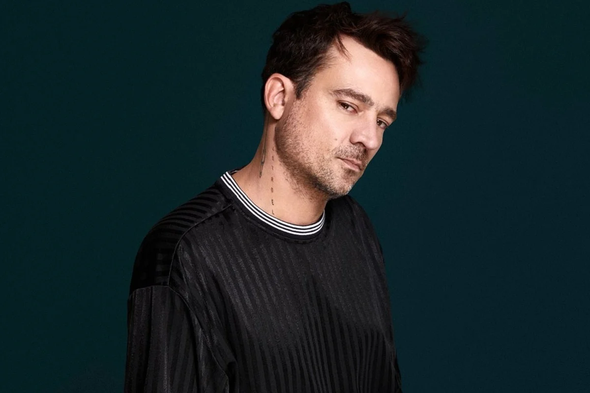

¿Quien es chano?
Chano
Santiago Moreno Charpentier, conocido artísticamente como Chano, es un cantante, compositor, pianista y guitarrista argentino.
Alcanzó la prominencia como el frontman de la banda pop rock Tan Biónica,
sdurante la primera mitad de la década de 2010

Tan Bionica
Chano en tan bionica
Tan Biónica es un grupo musical argentino surgido en Buenos Aires en el año 2002,
formado por Chano, Seby, Bambi y Diego,
Actualmente, el grupo se encuentra en un impasse desde el 19 de abril de 2016.
Chano en el "luna Park"
Chano Charpentier anunció su regreso a los escenarios luego del show que brindó el 22 de marzo de este año en Ituzaingó.
Está confirmado que el cantante estará tocando en el mítico Luna Park el próximo jueves 3 de noviembre.
Encuentra a chano en el "luna Park"